Diseño editorial y maquetación
profesional — libros, revistas, catálogos
El diseño editorial tiene una lógica propia. No es solo hacer que algo quede bonito en una página: es construir un flujo de lectura, jerarquizar la información, elegir tipografías que funcionen en cuerpo pequeño, preparar archivos que lleguen a imprenta exactamente como estaban pensados. He trabajado en contextos muy distintos: desde libros de proyecto con meses de preparación hasta portadas de periódico con cierre en horas. La experiencia en prensa diaria ha sido especialmente útil para aprender a tomar decisiones rápidas con criterio, sin tiempo para dudas.
Portadas y suplementos especiales de prensa
Portadas y suplementos especiales diseñados durante 2024–2026. Incluye la portada del suplemento especial de la Fiesta de la Vendimia 2024 (Moreda) y la portada del suplemento de las Fiestas de La Blanca 2025 de Vitoria-Gasteiz. Dos ejemplos de diseño editorial de impacto con plazos de producción ajustados y tiradas reales.

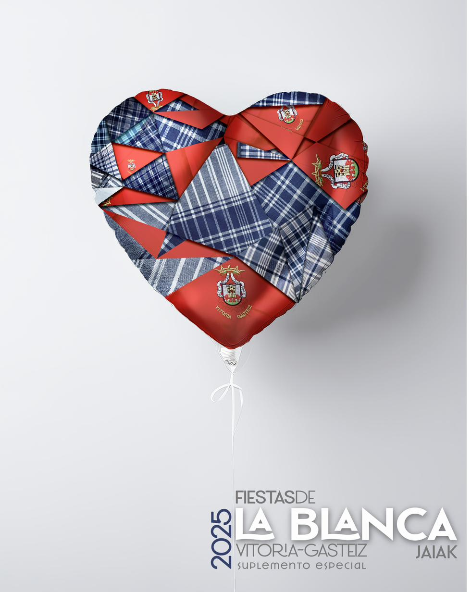
Portadas de suplemento para distintas publicaciones del Diario
Serie de portadas y dobles páginas de suplementos especiales diseñados para las distintas cabeceras y publicaciones del Diario de Noticias de Álava y Ediciones Izoria durante 2024–2026. Incluye materiales para eventos de gran alcance como las Fiestas de La Blanca o el Árbol de la Amistad, y publicaciones temáticas de vino, deporte y medio ambiente.
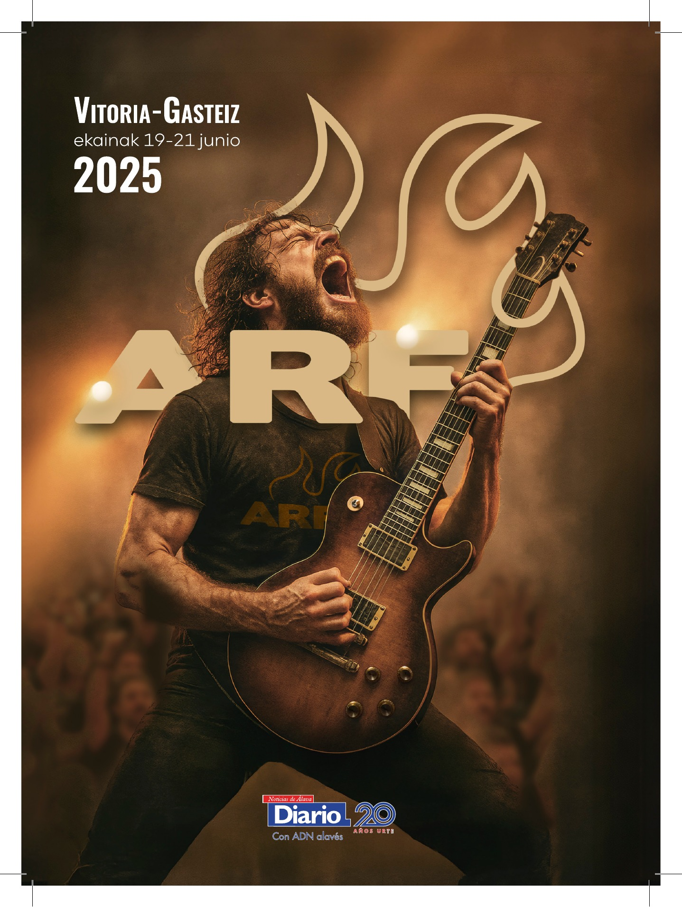
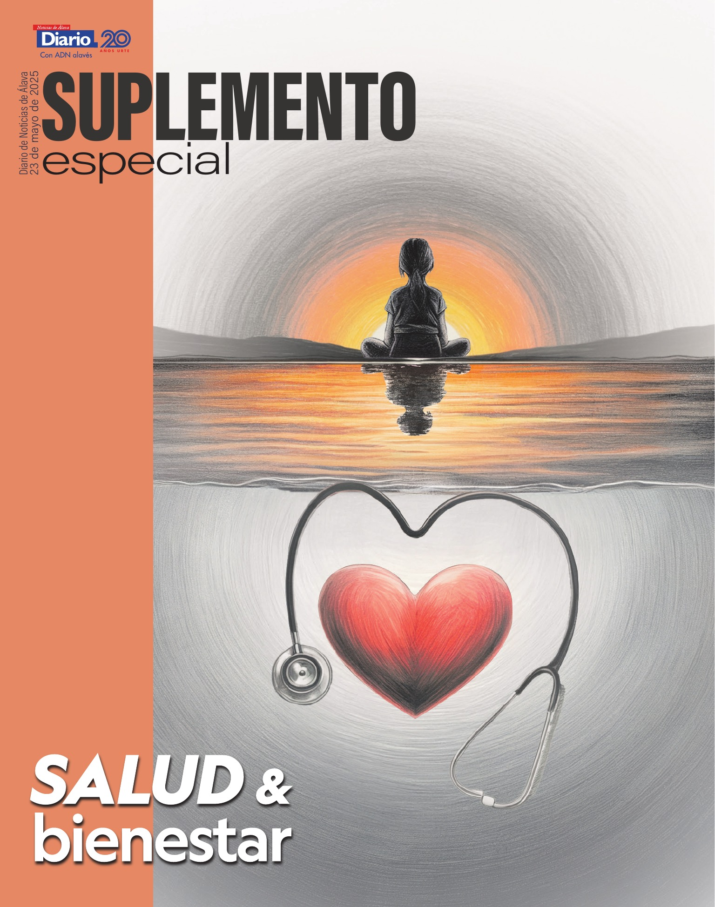
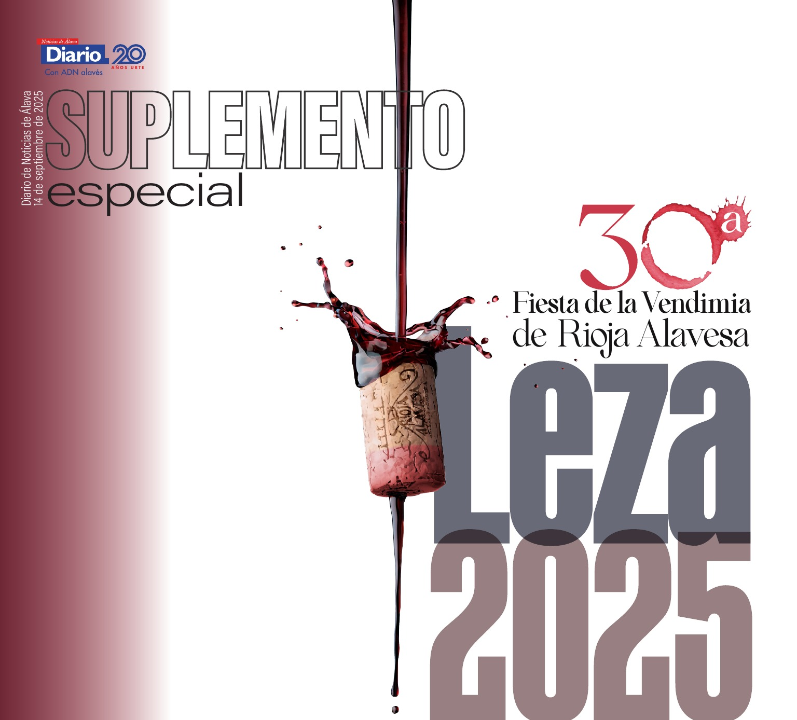
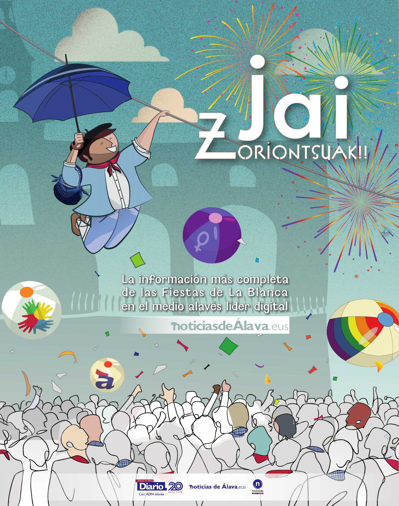
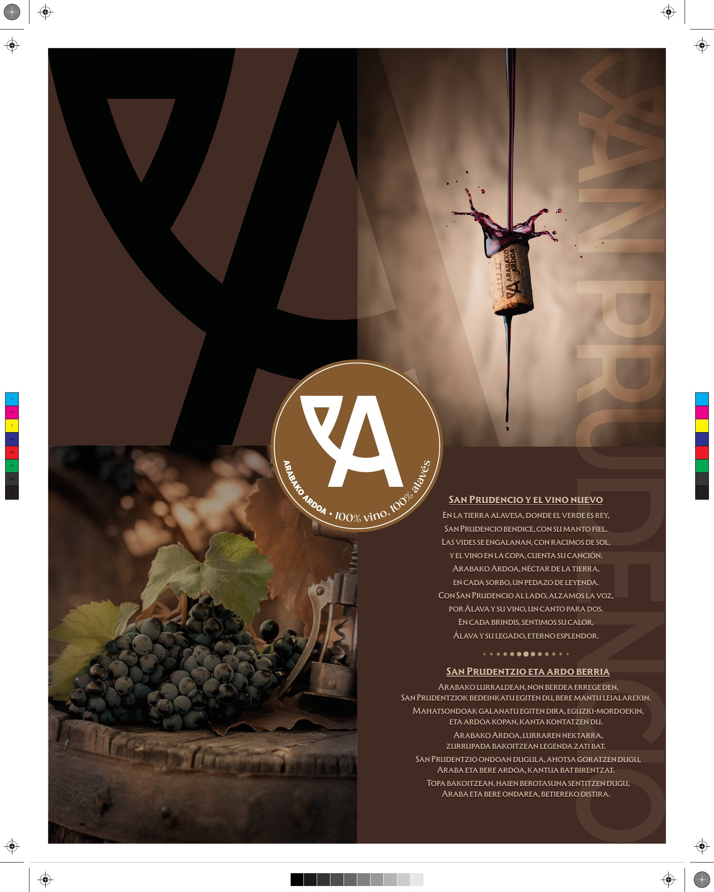
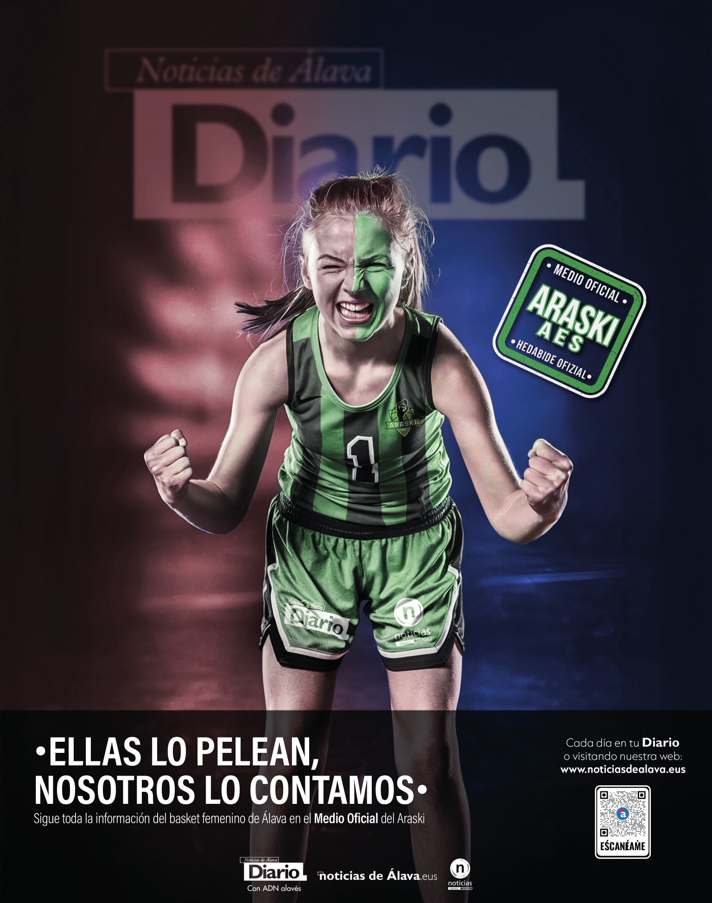
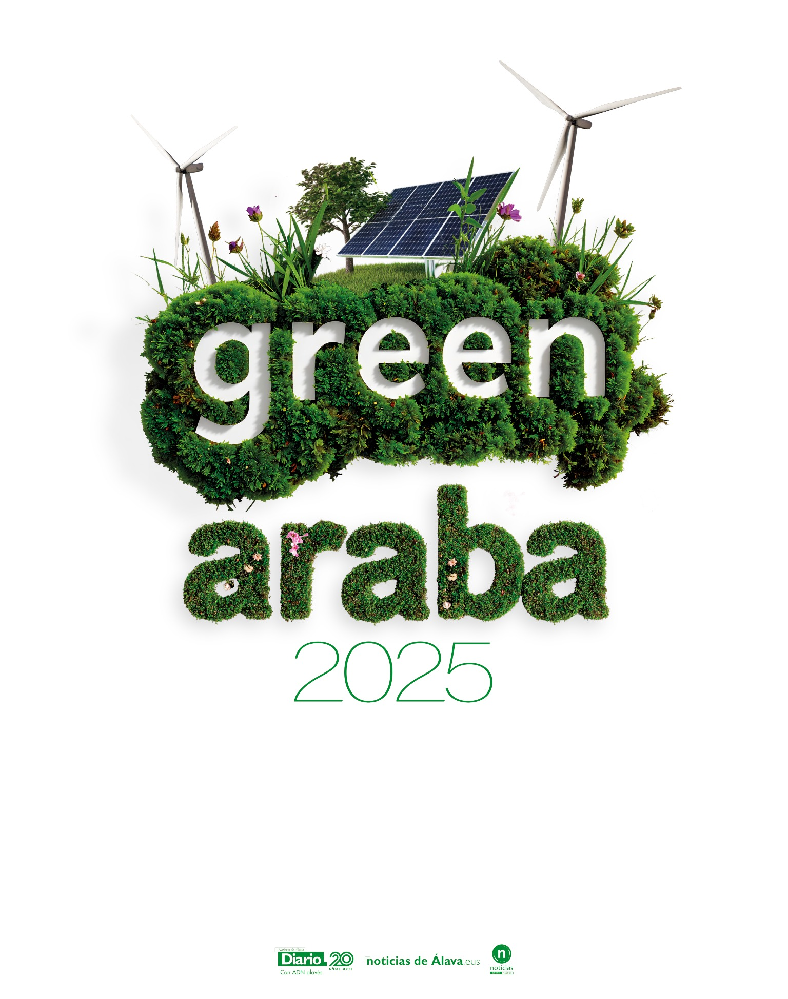
«Nuestras Recetas» — Diseño integral de libro de cocina
Diseño editorial completo de un libro de recetas: concepto de portada, sistema tipográfico interior, tratamiento de las imágenes de platos y estructura de secciones por categoría (pasta, carnes, postres, ensaladas, asados, verdura). La portada combina una fotografía de cocina con una composición tipográfica bold que superpone las categorías del libro en distintos tamaños y colores.
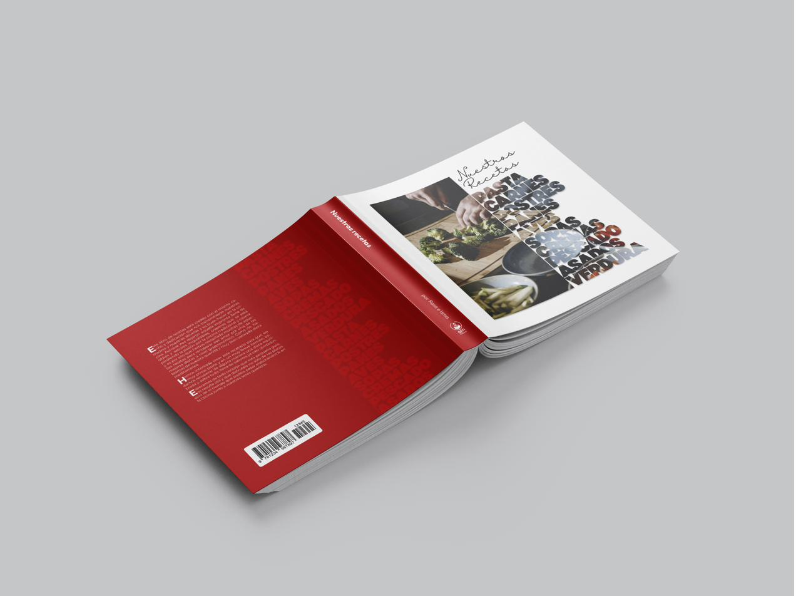
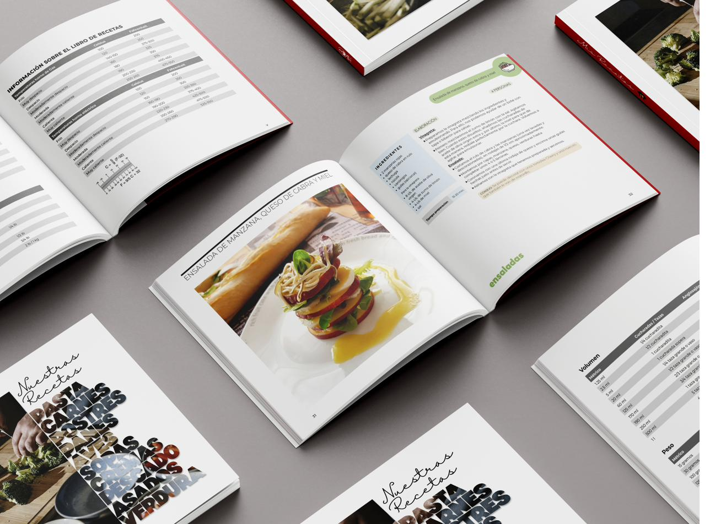
«La Vida de Pi» — Diseño de portada y contraportada
Ejercicio de dirección de arte para portada de libro literario. El reto: sintetizar en una sola imagen los dos elementos centrales de la novela de Yann Martel —el océano y el tigre. La solución formal usa una letra 'Pi' gigante como ventana a través de la que emerge la cabeza del tigre, mientras la silueta del protagonista de espaldas sobre una barca establece la escala. Paleta: rosa fucsia / teal / naranja dorado. Proceso: concepto → boceto → ilustración vectorial completa → portada + contraportada → mockup 3D.
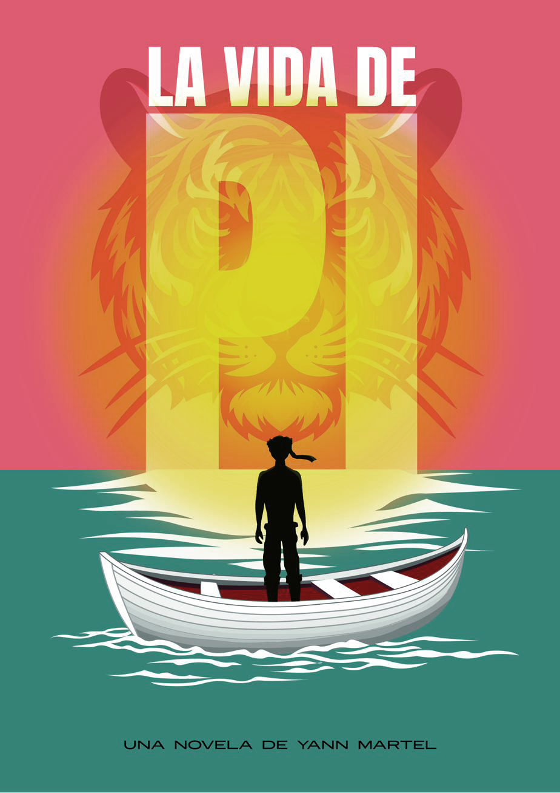
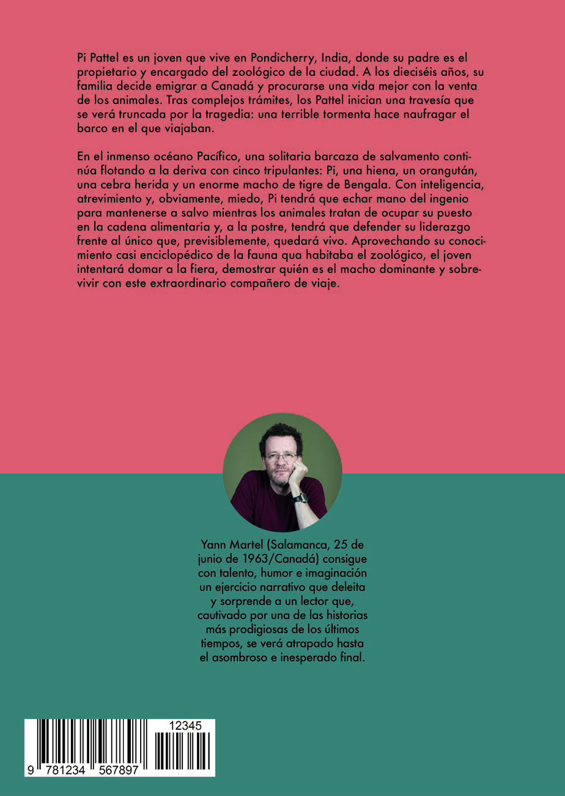
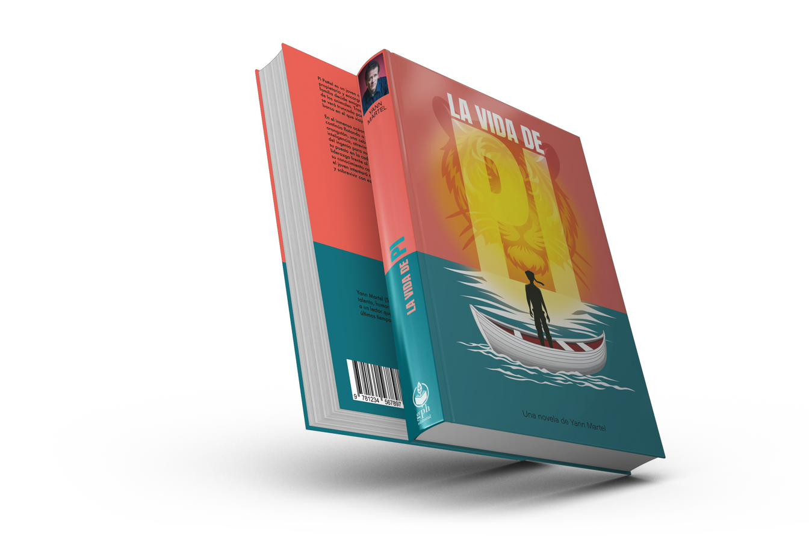
¿Quieres verlo todo junto? El portfolio completo en un único documento.
¿Necesitas
maquetación editorial?
Libro, catálogo, revista o folleto. Cuéntame el proyecto y el plazo.
Solicitar presupuesto